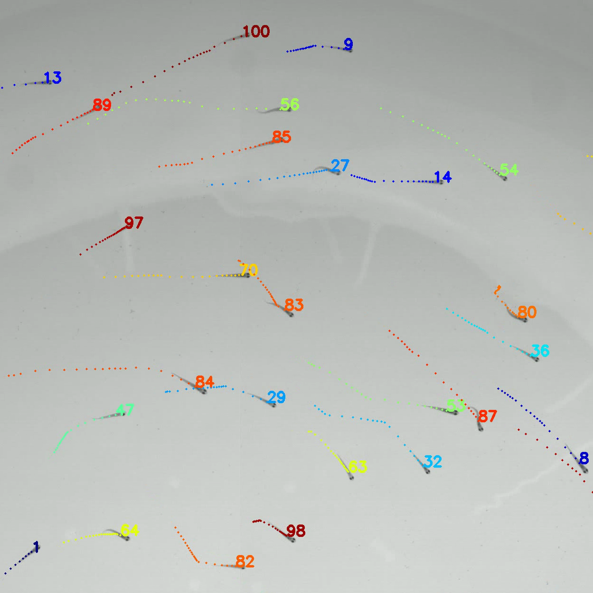
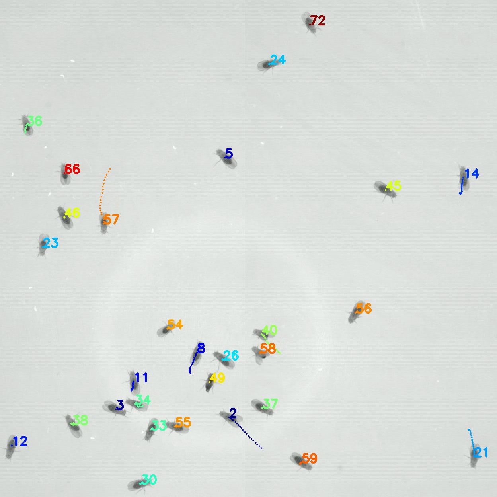
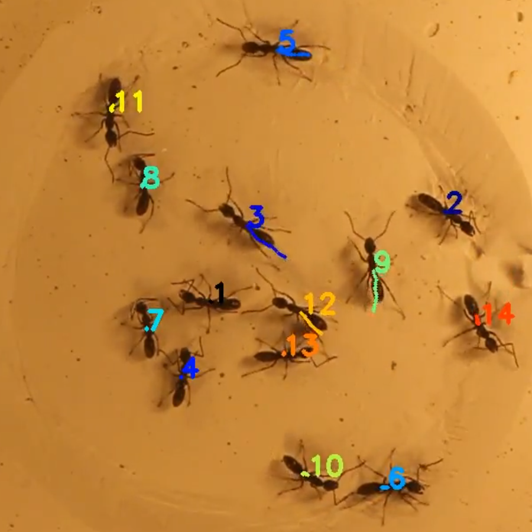
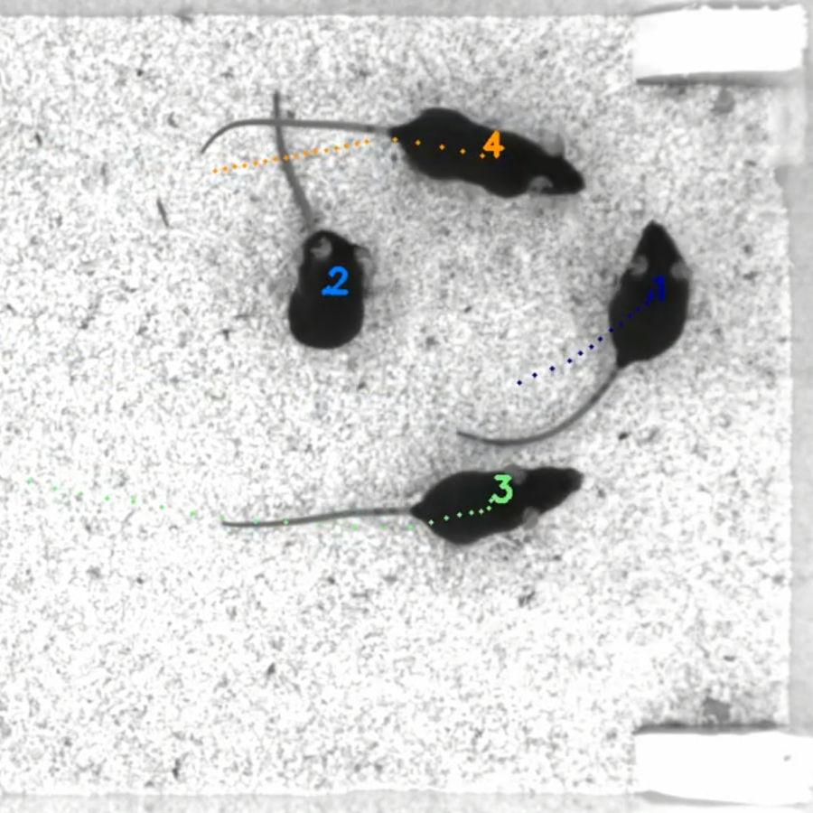
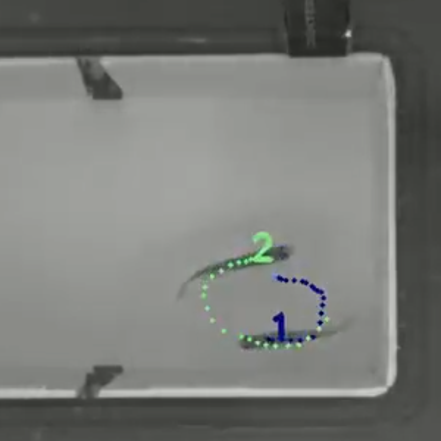

Welcome to idtracker.ai’s documentation!¶
idtracker.ai allows to track groups of up to 100 unmarked animals from videos.
    Installation and git repository¶
The source code and installation instructions can be found at https://gitlab.com/polavieja_lab/idtrackerai.git.
Quickstart¶
Check out the Quickstart to learn how to use the software.
Video conditions¶
Check out the General video conditions to get some advice in how to create videos that will give you the best tracking results with idtracker.ai.
Gallery¶
Send us your videos using idtracker.ai and we will add them to our gallery with proper attribution.
Frequently Asked Questions (FAQs)¶
We have summarized in the FAQs some of the questions that we get more often.
Trajectory analysis¶
We provide a set of Jupyter Notebooks for analysis of the trajectories that idtracker.ai outputs.
Code documentation¶
idtracker.ai is opensource and free software (both as in freedom and as in free beer). We have documented the code so that it is easier for developers to modify it to their needs.
idmatcher.ai matches identities between videos¶
We have also developed a toolbox to match identities between videos, called idmatcher.ai.
Other works using idtracker.ai¶
Let us know if you are using idtracker.ai in your research.
- Heras, F. J., Romero-Ferrero, F., Hinz, R. C., & de Polavieja, G. G. (2018). Deep attention networks reveal the rules of collective motion in zebrafish. bioRxiv, 400747.
- Laan, A., Iglesias-Julios, M., & de Polavieja, G. G. (2018). Zebrafish aggression on the sub-second time scale: evidence for mutual motor coordination and multi-functional attack manoeuvres. Royal Society open science, 5(8), 180679.
References¶
When using information from this web page please reference
Romero-Ferrero, F., Bergomi, M.G., Hinz, R.C., Heras, F.J.H., de Polavieja, G.G., Nature Methods, 2019. idtracker.ai: tracking all individuals in small or large collectives of unmarked animals (F.R.-F. and M.G.B. contributed equally to this work. Correspondence should be addressed to G.G.d.P: gonzalo.polavieja@neuro.fchampalimaud.org)
Find here the preprint version of the manuscript.